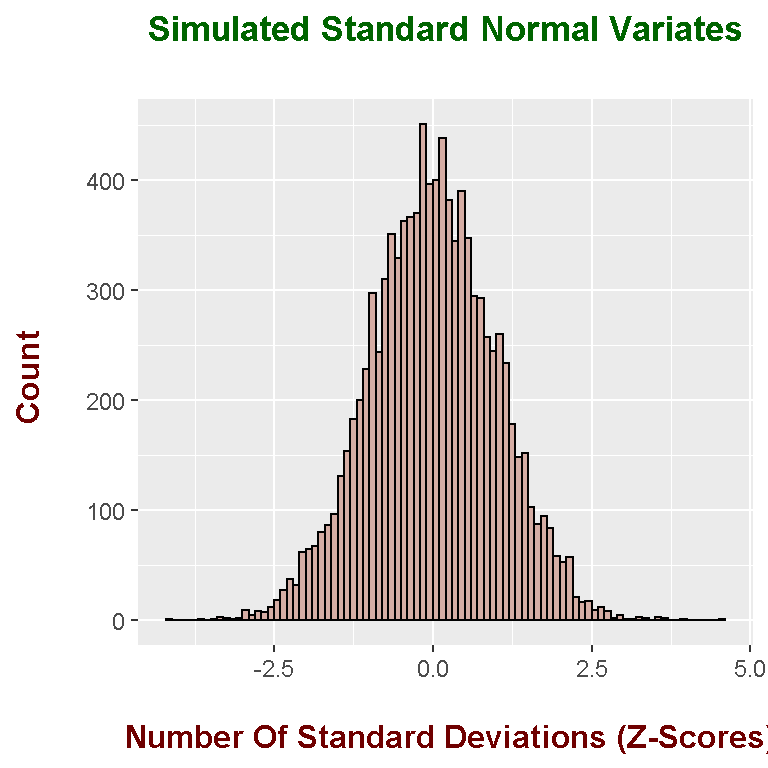
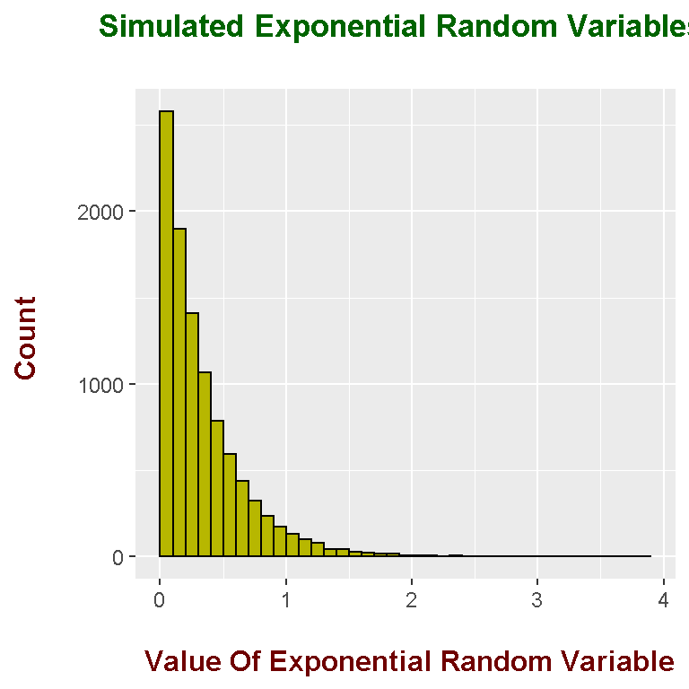
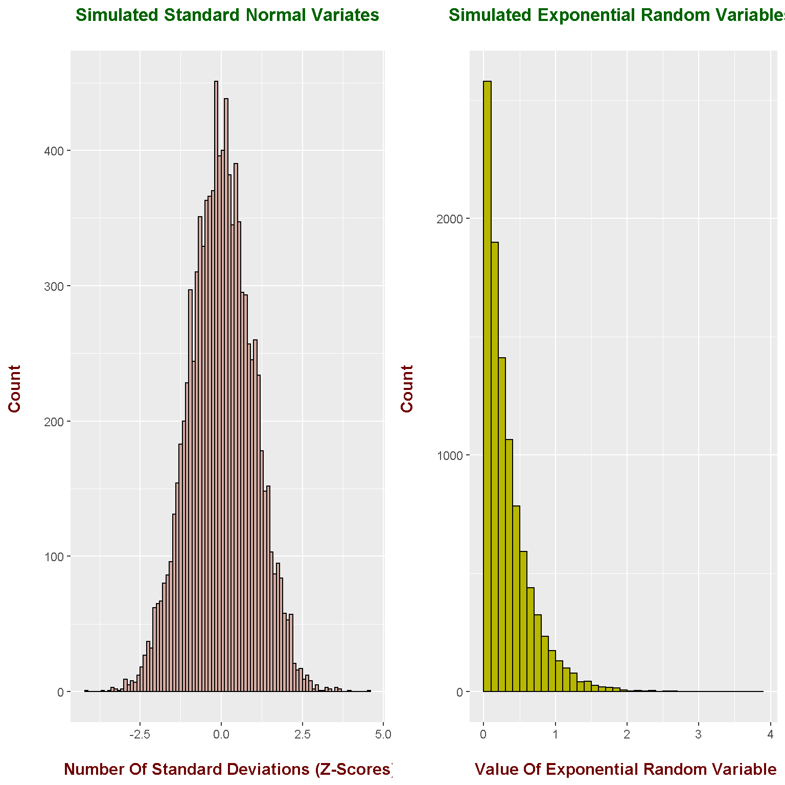

Hi there. With R, you are able to have multiple plots in one graph with the use of the gridExtra package. The main reference is http://lightonphiri.org/blog/ggplot2-multiple-plots-in-one-graph-using-gridextra.
Before starting the main R code, the ggplot2 and gridExtra packages need to be loaded into R with the use of library(). (Use install.packages(“pkg_name”) to install a package in R.)
library(ggplot2)
library(gridExtra)
For the first plot, I simulate 10000 standard normal random variables (mean of 0 and variance of 1) in R. Most of the values will lie within +3 standard deviations from the mean of 0. Values outside of 3 standard deviations are extreme cases or outliers.
The results are plotted in ggplot2 in the form of a histogram.
# Normals Plot:
normals <- rnorm(n = 10000, mean = 0, sd = 1)
norm_plot <- ggplot(data = NULL, aes(normals)) +
geom_histogram(binwidth = 0.1, boundary = 2, col = "black", fill = "#D5ADA4") +
labs(x = "\n Number Of Standard Deviations (Z-Scores)", y = "Count \n", title = "Simulated Standard Normal Variates\n") +
theme(plot.title = element_text(hjust = 0.5, size = 13, face = "bold", colour = "darkgreen"),
axis.title.x = element_text(face="bold", colour="#6f0000", size = 12),
axis.title.y = element_text(face="bold", colour="#6f0000", size = 12))
# Show normals plot:
norm_plot
In the second plot, I simulate 10000 exponential random variables in R with the rexp() function. I have set the rate of 3.
# Exponential Plot:
exponentials <- rexp(n = 10000, rate = 3)
exps_plot <- ggplot(data = NULL, aes(exponentials)) +
geom_histogram(binwidth = 0.1, boundary = 2, col = "black", fill = "#b7b700") +
labs(x = "\n Value Of Exponential Random Variable", y = "Count \n", title = "Simulated Exponential Random Variables \n") +
theme(plot.title = element_text(hjust = 0.5, size = 13, face = "bold", colour = "darkgreen"),
axis.title.x = element_text(face="bold", colour="#6f0000", size = 12),
axis.title.y = element_text(face="bold", colour="#6f0000", size = 12))
# Show exponentials plot:
exps_plot
From the gridExtra package in R, multiple plots can be put into one graph with the use of the grid.arrange() function. I put both the normal and exponential random variables plot into one with ncol = 2.
# Two plots in one:
grid.arrange(norm_plot, exps_plot, ncol = 2)